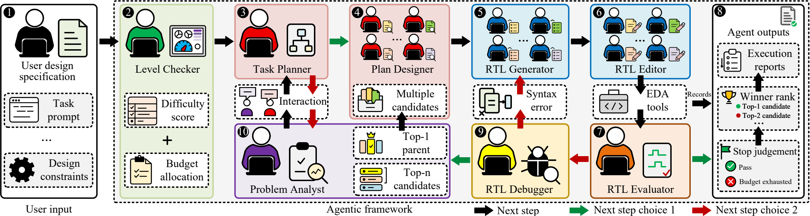

Large language models (LLMs) have been increasingly applied to register-transfer-level (RTL) code generation and debugging for FPGA design. Existing agentic frameworks have obtained high functional success rates on RTL benchmarks. However, difficult cases may still require repeated fix attempts with substantial runtime and token consumption.
To address these issues, this paper presents Fibo, a role-orchestrated agentic reasoning framework for FPGA RTL design. Fibo combines role-orchestrated candidate refinement, history-aware temporal analysis, and budget-aware pipelined execution through an extensible plug-in architecture. Benchmark results on the open-source VerilogEval datasets demonstrate that Fibo achieves at least 99.36% pass@10 on all evaluated benchmarks and LLM-backbone configurations. Under the same Deepseek V4 Flash setting, Fibo achieves a pass@1 improvement of up to 6.73% and delivers up to 3.35× speedup over the state-of-the-art work.

Figure: Overview of the proposed Fibo framework for autonomous FPGA RTL design. The workflow coordinates role-orchestrated planning and RTL refinement with EDA evaluation, top-n shared analysis, top-1 parent selection, and budget-aware termination.